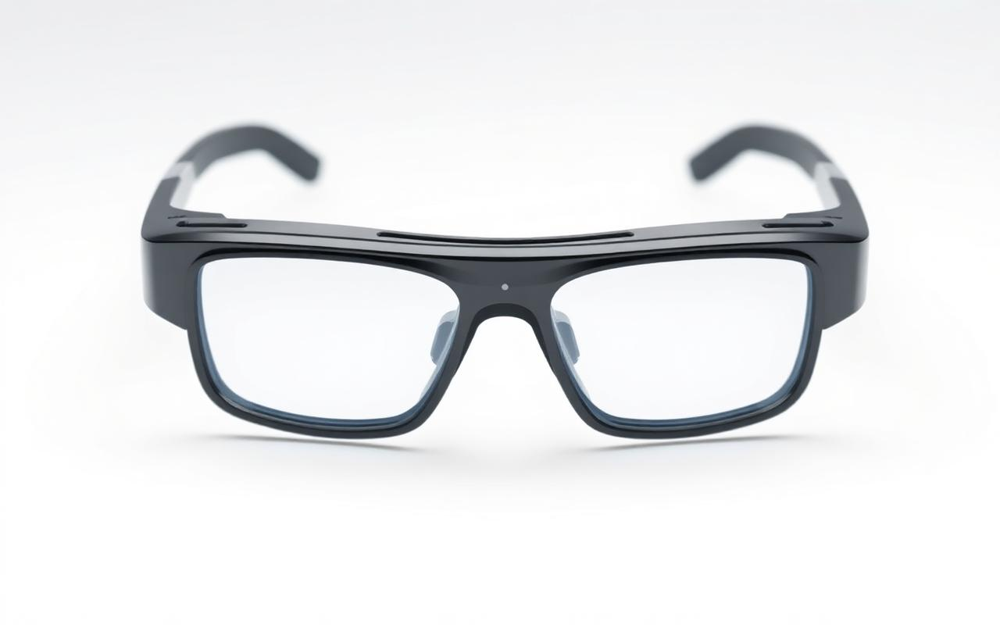

Research: Eye Ice
Eye Ice is our flagship research project — a pair of smart glasses fitted with ultrasonic sensors that let people with partial or total blindness “hear” the obstacles ahead of them.
Hearing what you cannot see
The frame embeds discreet ultrasonic emitters and receivers. When an obstacle is detected, the glasses generate a soft, directional audio signal whose pitch and rhythm reflect distance and position. Users learn to interpret these cues intuitively in just a few hours of training.
Eye Ice is designed as a complement, not a replacement, to the white cane. Together, they extend the user's perception sphere upward — to head-height branches, open cabinet doors, or signs — where a cane cannot reach.

Subtle audio cues
Bone-conduction signals keep the user's ears free for the surrounding world.
Ultrasonic sensing
Detects obstacles up to 3 meters ahead, including objects at head height the cane misses.
Lightweight
Under 60 grams. All-day comfort, with a full day of battery on a single charge.
Complementary
Designed to work alongside the white cane and guide dogs, not to replace them.